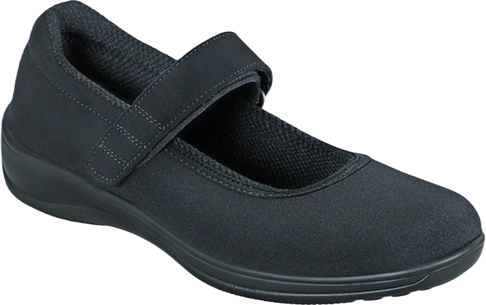
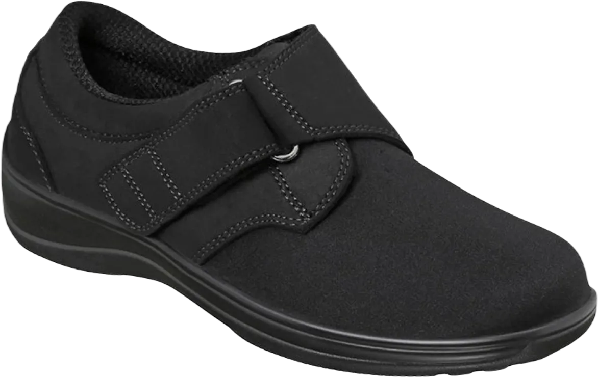
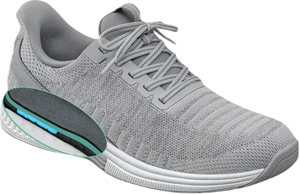
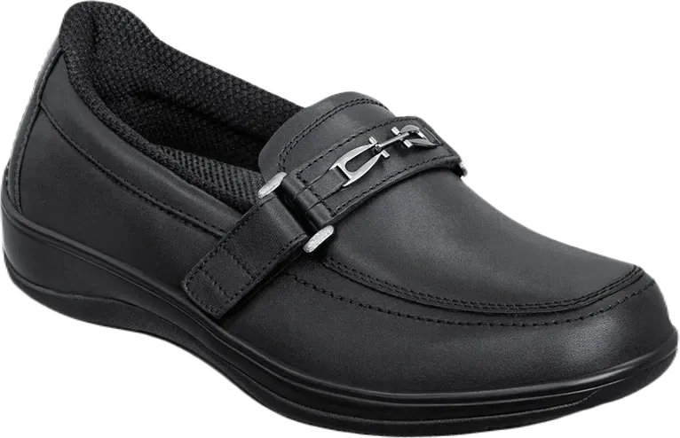
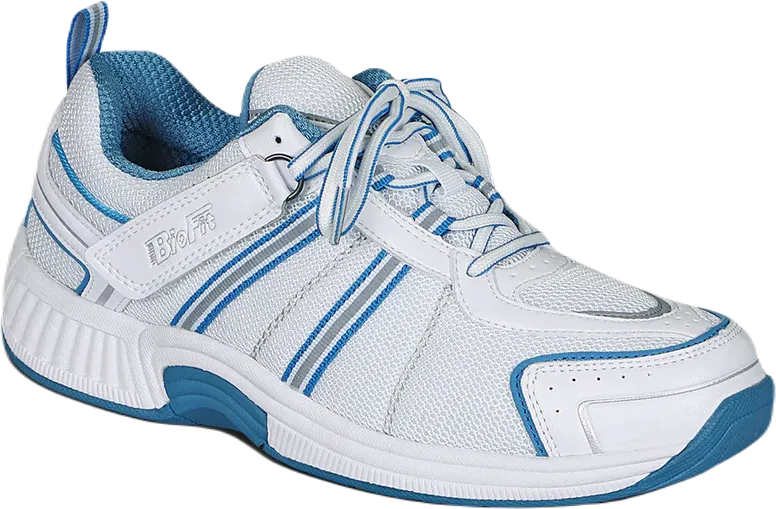
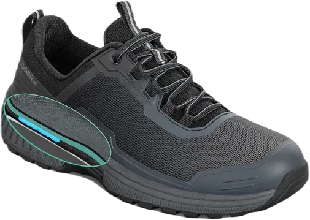
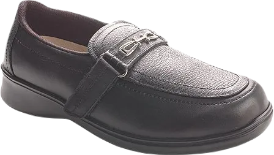

8 Best Shoes After Neuroma Surgery in 2024
I experienced a severe case of Morton’s Neuroma, where the swelling of the joints was extreme, and my footwear felt incredibly tight. It felt like I was stepping on a stone every time I walked, particularly affecting the area between my third and fourth toes. This discomfort persisted until I switched to Italian shoe brands that feature a wide toe box and excellent arch support, which helped alleviate the underlying heat and pressure.
However, I know others who have struggled with this condition without success and have sought medical treatment to address the neuroma. While traditional orthotics can be beneficial when provided by a podiatrist or alignment specialist, I believe the choice of shoes should also be emphasized in managing this condition.
-
#1
Orthofeet Charlotte Arch
.webp)
The Orthofeet Charlotte Comfort Orthopedic Slippers for women are more than just a stylish accessory; they are designed specifically for arch support and orthotic comfort. With their anatomical arch and the robust cushioning tailored to each foot, it’s no wonder these slippers hold the top spot on our list. They feature a slip-resistant design, making them easy to put on and take off while also providing support for your back, legs, and hips.
These slippers play a crucial role in managing foot health by offering arch and orthotic support, helping to alleviate the effects of conditions like Morton’s Neuroma and other foot issues. They are designed to enhance your movement and walking experience, making it more comfortable, which can increase your endurance and improve blood circulation in your feet, legs, and lower back. As a result, you'll feel more energized and capable of standing or walking for longer periods.
Equipped with the Ergonomic-Stride™ system, these slippers enhance stability and facilitate foot movement, making them easier to navigate even on uncertain surfaces. Given these features, it’s no surprise that I have ranked this product highly in our selection. -
#2
Orthofeet Springfield comfort
If you’re looking for a stylish and comfortable pair of outdoor shoes, the Orthofeet Springfield women's Mary-Jane shoes are an excellent choice. Unlike traditional footwear, these shoes feature a flexible back and a secure strap, enhancing their overall comfort. They offer great arch support and are designed to accommodate your movements. Made from high-quality materials, these shoes provide ample support, which can be beneficial for individuals dealing with conditions ranging from diabetes to bunions.
One of the standout features of these shoes is the gel cushioning integrated into the heel. This gel padding significantly alleviates the symptoms of Morton’s neuroma by providing essential arch and heel support.
Additionally, the gel creates a remarkable cushion around the pressure points on your foot, ensuring that you receive optimal support during each step. Combined with the excellent arch support, these shoes are perfect for any occasion, whether you're at home or out making wonderful memories. -
#3
Neuroma Velcro through Orthofeet Wichita Morton
If you find traditional Velcro shoes challenging to wear but still want a fashionable option, the Orthofeet Wichita women’s Velcro shoes could be the perfect fit for you. These shoes feature a sleek and practical design, making them an ideal companion for both work and casual outings. With exceptional arch support and breathable materials, they adapt to any foot shape while providing lightweight support to enhance your comfort during movement.
Regardless of the muscle discomfort you may be experiencing, these shoes offer a fantastic solution for anyone seeking new footwear. One of my favorite aspects of these shoes is the uniquely designed strap across the midfoot, which allows for adjustable height. This feature ensures that if your feet tend to swell, the shoes can easily accommodate that change, making them suitable for your specific needs.
Moreover, adjusting the strap is a breeze, which is particularly beneficial for those who struggle to put on and take off their shoes after a long day. Overall, the adjustable strap provides excellent value for those who need it most, making these shoes a practical and stylish choice. -
#4
Orthofeet proven ache remedy Plantar Fasciitis
Alleviates Foot Pain: Do you experience foot pain while walking or standing for extended periods? Or perhaps you feel a sharp pain in your foot when taking your first steps in the morning? If this sounds familiar, you might be dealing with Morton’s neuroma. Fortunately, you can alleviate the effects of this condition by wearing the right footwear, such as the Orthofeet tested pain relief shoes for plantar fasciitis. Whether it’s a night out with friends, a busy day at work, or just running errands, these shoes will keep your feet comfortable and happy all day long.
Orthofeet is one of the leading brands for supportive footwear. With this model, you’ll enjoy excellent balance due to its optimal arch height. These women's Morton’s neuroma shoes feature flexibility, an anatomical arch, and a sturdy heel to support the areas of your feet that endure the most weight. Ergonomically cushioned, they help enhance your stability while accommodating your movements. In addition to alleviating symptoms of Morton’s neuroma, these shoes are also ideal for anyone experiencing other foot conditions, such as plantar fasciitis, hammertoes, bunions, and flat feet, among others.
By prioritizing comfort and support, Orthofeet footwear is designed to improve your overall foot health, allowing you to enjoy your daily activities without discomfort. -
#5
Orthofeet Chelsea Morton’s Neuroma
Slip-On Loafer for Comfort and Style: If you’re looking for an affordable and stylish loafer that offers great comfort, the Orthofeet Chelsea Slip-On Loafer for Morton’s Neuroma is an excellent choice. It provides solid support for your arches and heels while enhancing your mobility with its sleek design. Unlike typical orthopedic shoes, these loafers feel comfortable and fit well in various settings. They also come with removable insoles, allowing for personalized comfort.
Easy to Wear: These shoes are easy to slip on and feature a Velcro fastening system for a secure fit. This is especially beneficial for individuals with Morton’s Neuroma, as poorly fitting shoes can lead to painful injuries. A snug or loose fit can exacerbate symptoms, making the adjustable Velcro strap a great option for a customized fit.
Safety and Comfort: Overall, the Orthofeet Chelsea Slip-On Loafer combines comfort, support, and adaptability. Its thoughtful design helps prevent foot injuries while providing a stylish option for everyday wear, keeping your feet comfortable all day long. -
#6
Neuroma Athletic Orthofeet Tahoe wide Morton
Orthofeet Tahoe Athletic Shoe: If you’re seeking something truly exceptional, the Orthofeet Tahoe Wide Athletic Shoe for Morton’s Neuroma is the perfect fit for you. Designed with strong arch and heel support along with a lightweight, non-invasive construction, this shoe provides excellent stability and comfort. Individuals suffering from Morton’s Neuroma can feel at ease knowing there’s an athletic shoe tailored to their needs, allowing for customizable fitting options. The stylish blue and white design makes it a versatile choice that pairs well with both work attire and casual outfits.
Ease of Use: One notable aspect of this shoe is its user-friendly design. However, I rated it slightly lower because those who experience dexterity issues might find it challenging to tie the laces securely. It’s essential for footwear to accommodate various needs, and this shoe may pose a bit of difficulty for some wearers.
Stylish Comfort: Overall, the Orthofeet Tahoe combines functionality and style, offering great support for those dealing with foot discomfort. Its fashionable design and practical features make it a worthwhile investment for anyone looking to enhance their daily comfort while maintaining a trendy look. -
#7
Orthofeet Verve wide Morton’s Neuroma Athletic
Orthofeet Verve Athletic Shoes: The Orthofeet Verve Wide Athletic Shoes are designed to cater to your foot's muscle needs. These shoes feature a gel insert that targets pressure points, helping to alleviate the discomfort associated with Morton’s Neuroma. With exceptional arch support and gradual cushioning, they are crafted to assist with various everyday activities, providing relief for your feet.
Comfort and Support: No matter what issues you may face with your feet, these shoes work to reduce the overall burden, making each step more comfortable. Their thoughtful design focuses on enhancing your mobility while minimizing discomfort, allowing you to remain active without the nagging pain that often comes with foot conditions.
Customer Satisfaction: Many users have reported positive results with the Orthofeet Verve shoes. Loyal customers appreciate their comfort and support, often incorporating them into their daily footwear rotation. If you’re looking for a reliable shoe that can help ease foot pain, this model could be a great addition to your collection. -
#8
Women’ Orthofeet shoes 817 Slip-On
If you have Morton’s neuroma, you likely experience discomfort while walking, running, or even just lounging throughout the day. Wearing the right shoes is crucial to addressing these issues, and that’s where the Orthofeet 817 comes into play.
This shoe is arguably one of the best options for those suffering from Morton’s neuroma, plantar fasciitis, neuropathy, arthritis, and diabetes. It features a lightweight ergonomic cushioned sole that enhances breathability and comfort, making it ideal for daily wear.
Designed specifically for women, Morton’s neuroma shoes also come equipped with premium orthotic insoles and an anatomical arch that provides multiple layers of support. These elements work together to deliver cushioning and stability, helping to reduce immediate and long-term strain on your feet, legs, lower back, and knees.